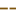
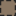

<!doctype html>
<html lang="en">
    <head>
        <meta charset="utf-8">
        <meta http-equiv="X-UA-Compatible" content="IE=edge">
        <meta name="viewport" content="initial-scale=1,user-scalable=no,maximum-scale=1,width=device-width">
        <meta name="mobile-web-app-capable" content="yes">
        <meta name="apple-mobile-web-app-capable" content="yes">
        <link rel="stylesheet" href="css/leaflet.css">
        <link rel="stylesheet" href="css/qgis2web.css"><link rel="stylesheet" href="css/fontawesome-all.min.css">
        <link rel="stylesheet" href="css/leaflet-control-geocoder.Geocoder.css">
        <style>
        #map {
            width: 1090px;
            height: 813px;
        }
        </style>
        <title></title>
    </head>
    <body>
        <div id="map">
        </div>
        <script src="js/qgis2web_expressions.js"></script>
        <script src="js/leaflet.js"></script>
        <script src="js/leaflet.rotatedMarker.js"></script>
        <script src="js/leaflet.pattern.js"></script>
        <script src="js/leaflet-hash.js"></script>
        <script src="js/Autolinker.min.js"></script>
        <script src="js/rbush.min.js"></script>
        <script src="js/labelgun.min.js"></script>
        <script src="js/labels.js"></script>
        <script src="js/leaflet-control-geocoder.Geocoder.js"></script>
        <script src="data/uzemiHS_0.js"></script>
        <script src="data/landuseforest_HS_1.js"></script>
        <script src="data/roads_2.js"></script>
        <script src="data/uzemiHSkoprovat_3.js"></script>
        <script>
        var map = L.map('map', {
            zoomControl:true, maxZoom:28, minZoom:1
        }).fitBounds([[49.38339334197998,18.154020711812674],[49.444743728927634,18.280529161425076]]);
        var hash = new L.Hash(map);
        map.attributionControl.setPrefix('<a href="https://github.com/tomchadwin/qgis2web" target="_blank">qgis2web</a> &middot; <a href="https://leafletjs.com" title="A JS library for interactive maps">Leaflet</a> &middot; <a href="https://qgis.org">QGIS</a>');
        var autolinker = new Autolinker({truncate: {length: 30, location: 'smart'}});
        var bounds_group = new L.featureGroup([]);
        function setBounds() {
        }
        function pop_uzemiHS_0(feature, layer) {
            var popupContent = '<table>\
                    <tr>\
                        <td colspan="2">' + (feature.properties['fid'] !== null ? autolinker.link(feature.properties['fid'].toLocaleString()) : '') + '</td>\
                    </tr>\
                </table>';
            layer.bindPopup(popupContent, {maxHeight: 400});
        }

        function style_uzemiHS_0_0() {
            return {
                pane: 'pane_uzemiHS_0',
                opacity: 1,
                color: 'rgba(35,35,35,1.0)',
                dashArray: '',
                lineCap: 'butt',
                lineJoin: 'miter',
                weight: 4.0, 
                fill: true,
                fillOpacity: 1,
                fillColor: 'rgba(191,165,138,1.0)',
                interactive: true,
            }
        }
        map.createPane('pane_uzemiHS_0');
        map.getPane('pane_uzemiHS_0').style.zIndex = 400;
        map.getPane('pane_uzemiHS_0').style['mix-blend-mode'] = 'normal';
        var layer_uzemiHS_0 = new L.geoJson(json_uzemiHS_0, {
            attribution: '',
            interactive: true,
            dataVar: 'json_uzemiHS_0',
            layerName: 'layer_uzemiHS_0',
            pane: 'pane_uzemiHS_0',
            onEachFeature: pop_uzemiHS_0,
            style: style_uzemiHS_0_0,
        });
        bounds_group.addLayer(layer_uzemiHS_0);
        map.addLayer(layer_uzemiHS_0);
        function pop_landuseforest_HS_1(feature, layer) {
            var popupContent = '<table>\
                    <tr>\
                        <td colspan="2">' + (feature.properties['id'] !== null ? autolinker.link(feature.properties['id'].toLocaleString()) : '') + '</td>\
                    </tr>\
                    <tr>\
                        <td colspan="2">' + (feature.properties['@id'] !== null ? autolinker.link(feature.properties['@id'].toLocaleString()) : '') + '</td>\
                    </tr>\
                    <tr>\
                        <td colspan="2">' + (feature.properties['landuse'] !== null ? autolinker.link(feature.properties['landuse'].toLocaleString()) : '') + '</td>\
                    </tr>\
                    <tr>\
                        <td colspan="2">' + (feature.properties['type'] !== null ? autolinker.link(feature.properties['type'].toLocaleString()) : '') + '</td>\
                    </tr>\
                    <tr>\
                        <td colspan="2">' + (feature.properties['source'] !== null ? autolinker.link(feature.properties['source'].toLocaleString()) : '') + '</td>\
                    </tr>\
                </table>';
            layer.bindPopup(popupContent, {maxHeight: 400});
        }

        function style_landuseforest_HS_1_0() {
            return {
                pane: 'pane_landuseforest_HS_1',
                opacity: 1,
                color: 'rgba(35,35,35,1.0)',
                dashArray: '1,5',
                lineCap: 'butt',
                lineJoin: 'miter',
                weight: 3.0, 
                fill: true,
                fillOpacity: 1,
                fillColor: 'rgba(138,119,99,1.0)',
                interactive: true,
            }
        }
        map.createPane('pane_landuseforest_HS_1');
        map.getPane('pane_landuseforest_HS_1').style.zIndex = 401;
        map.getPane('pane_landuseforest_HS_1').style['mix-blend-mode'] = 'normal';
        var layer_landuseforest_HS_1 = new L.geoJson(json_landuseforest_HS_1, {
            attribution: '',
            interactive: true,
            dataVar: 'json_landuseforest_HS_1',
            layerName: 'layer_landuseforest_HS_1',
            pane: 'pane_landuseforest_HS_1',
            onEachFeature: pop_landuseforest_HS_1,
            style: style_landuseforest_HS_1_0,
        });
        bounds_group.addLayer(layer_landuseforest_HS_1);
        map.addLayer(layer_landuseforest_HS_1);
        function pop_roads_2(feature, layer) {
            var popupContent = '<table>\
                    <tr>\
                        <td colspan="2">' + (feature.properties['osm_id'] !== null ? autolinker.link(feature.properties['osm_id'].toLocaleString()) : '') + '</td>\
                    </tr>\
                    <tr>\
                        <td colspan="2">' + (feature.properties['name'] !== null ? autolinker.link(feature.properties['name'].toLocaleString()) : '') + '</td>\
                    </tr>\
                    <tr>\
                        <td colspan="2">' + (feature.properties['ref'] !== null ? autolinker.link(feature.properties['ref'].toLocaleString()) : '') + '</td>\
                    </tr>\
                    <tr>\
                        <td colspan="2">' + (feature.properties['type'] !== null ? autolinker.link(feature.properties['type'].toLocaleString()) : '') + '</td>\
                    </tr>\
                    <tr>\
                        <td colspan="2">' + (feature.properties['oneway'] !== null ? autolinker.link(feature.properties['oneway'].toLocaleString()) : '') + '</td>\
                    </tr>\
                    <tr>\
                        <td colspan="2">' + (feature.properties['bridge'] !== null ? autolinker.link(feature.properties['bridge'].toLocaleString()) : '') + '</td>\
                    </tr>\
                    <tr>\
                        <td colspan="2">' + (feature.properties['maxspeed'] !== null ? autolinker.link(feature.properties['maxspeed'].toLocaleString()) : '') + '</td>\
                    </tr>\
                </table>';
            layer.bindPopup(popupContent, {maxHeight: 400});
        }

        function style_roads_2_0() {
            return {
                pane: 'pane_roads_2',
                opacity: 1,
                color: 'rgba(125,85,12,1.0)',
                dashArray: '10,5',
                lineCap: 'square',
                lineJoin: 'bevel',
                weight: 2.0,
                fillOpacity: 0,
                interactive: true,
            }
        }
        map.createPane('pane_roads_2');
        map.getPane('pane_roads_2').style.zIndex = 402;
        map.getPane('pane_roads_2').style['mix-blend-mode'] = 'normal';
        var layer_roads_2 = new L.geoJson(json_roads_2, {
            attribution: '',
            interactive: true,
            dataVar: 'json_roads_2',
            layerName: 'layer_roads_2',
            pane: 'pane_roads_2',
            onEachFeature: pop_roads_2,
            style: style_roads_2_0,
        });
        bounds_group.addLayer(layer_roads_2);
        map.addLayer(layer_roads_2);
        function pop_uzemiHSkoprovat_3(feature, layer) {
            var popupContent = '<table>\
                    <tr>\
                        <td colspan="2">' + (feature.properties['fid'] !== null ? autolinker.link(feature.properties['fid'].toLocaleString()) : '') + '</td>\
                    </tr>\
                </table>';
            layer.bindPopup(popupContent, {maxHeight: 400});
        }

        function style_uzemiHSkoprovat_3_0() {
            return {
                pane: 'pane_uzemiHSkoprovat_3',
                opacity: 1,
                color: 'rgba(35,35,35,1.0)',
                dashArray: '',
                lineCap: 'butt',
                lineJoin: 'miter',
                weight: 4.0, 
                fill: true,
                fillOpacity: 1,
                fillColor: 'rgba(191,165,138,0.0)',
                interactive: true,
            }
        }
        map.createPane('pane_uzemiHSkoprovat_3');
        map.getPane('pane_uzemiHSkoprovat_3').style.zIndex = 403;
        map.getPane('pane_uzemiHSkoprovat_3').style['mix-blend-mode'] = 'normal';
        var layer_uzemiHSkoprovat_3 = new L.geoJson(json_uzemiHSkoprovat_3, {
            attribution: '',
            interactive: true,
            dataVar: 'json_uzemiHSkoprovat_3',
            layerName: 'layer_uzemiHSkoprovat_3',
            pane: 'pane_uzemiHSkoprovat_3',
            onEachFeature: pop_uzemiHSkoprovat_3,
            style: style_uzemiHSkoprovat_3_0,
        });
        bounds_group.addLayer(layer_uzemiHSkoprovat_3);
        map.addLayer(layer_uzemiHSkoprovat_3);
        var osmGeocoder = new L.Control.Geocoder({
            collapsed: true,
            position: 'topleft',
            text: 'Search',
            title: 'Testing'
        }).addTo(map);
        document.getElementsByClassName('leaflet-control-geocoder-icon')[0]
        .className += ' fa fa-search';
        document.getElementsByClassName('leaflet-control-geocoder-icon')[0]
        .title += 'Search for a place';
        var baseMaps = {};
        L.control.layers(baseMaps,{' uzemiHS kopírovat': layer_uzemiHSkoprovat_3,' roads': layer_roads_2,' landuseforest_HS': layer_landuseforest_HS_1,' uzemiHS': layer_uzemiHS_0,},{collapsed:false}).addTo(map);
        setBounds();
        </script>
    </body>
</html>
